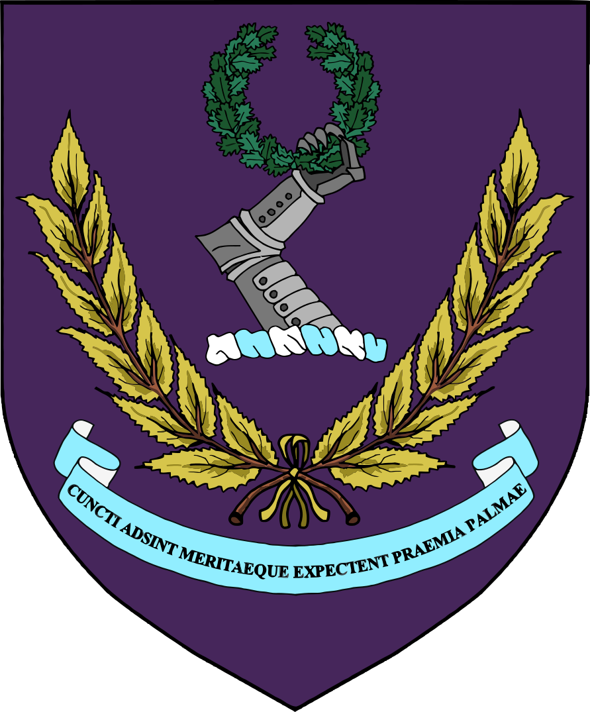
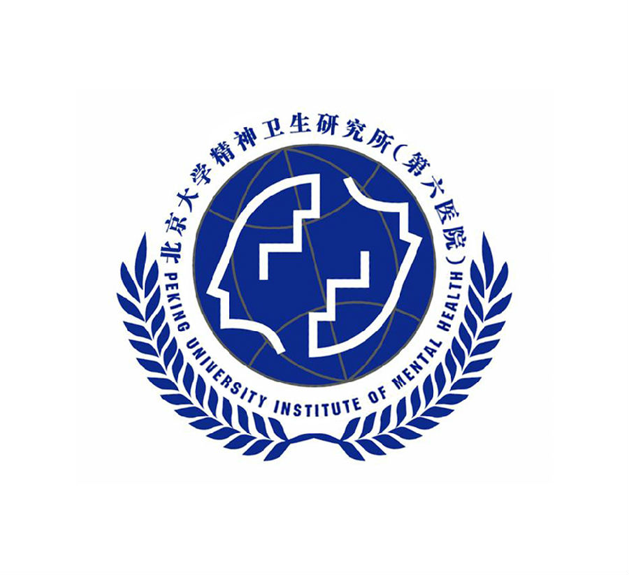

Yannan Li

University College LondonI am a Biomedical Sciences undergraduate at University College London, specialising in Drug Mechanisms with an emphasis on Pharmacology and Neurosciences. My research experience spans psychopharmacology, neuropharmacology, virology and cancer mechanobiology.
Research Interests:
Behavioural neuroscience, mouse models, neuropharmacology, experimental neuroscience and data analysis.
Please feel free to contact me via email for research-related enquiries.
Education
-
University College LondonBSc Biomedical Sciences
Technical Skills
- Animal Behaviour
- Mouse husbandry, DAT-Cre models, behavioural paradigm design, observation and data recording.
- Behavioural Tests
- MWM, SPT, OFT and TST; early-life stress models and conditioned reflex paradigms.
- Wet Lab
- Cell culture, PCR/qPCR, Western blotting, CPE assessment, drug screening, c-Fos and immunofluorescence staining.
- Data Analysis
- Behavioural data organisation and statistical analysis using Excel and Python.
- Languages
- Mandarin (Native), English (Fluent), Japanese (Conversational), French (Conversational).
Research Experience

Designed behavioural paradigms in DAT-Cre transgenic mice; supported husbandry for more than 100 mice, cohort tissue collection, PCR/qPCR, Western blotting, immunofluorescence and c-Fos staining.
Performed cell-based antiviral drug screening using HSV-1 and Coxsackievirus B3 infection models, combining cell culture, cytotoxicity assays, CPE assessment, IC50 determination, PCR and Western blotting.
Conducted a systematic review and meta-analysis of clinical evidence on calcium channel blockers in Parkinson’s disease.
Reviewed mechanosensitive Piezo channels in cancer progression and therapy, synthesising evidence across mechanotransduction, tumour biology, immune responses and therapeutic sensitivity.
Extracted, isolated and characterised marine-derived polysaccharides using HPLC, GC-MS and NMR.
Leadership & Academic Service
-
Transition MentorBiomedical Sciences, University College London
-
Co-organiserAcademic Seminars and Workshops, Micro Distance Youth Forum
Research Practice
Literature review, record-keeping, SOP adherence, troubleshooting, scientific writing, presentations and systematic data recording.
The complete curriculum vitae is available as a downloadable PDF.